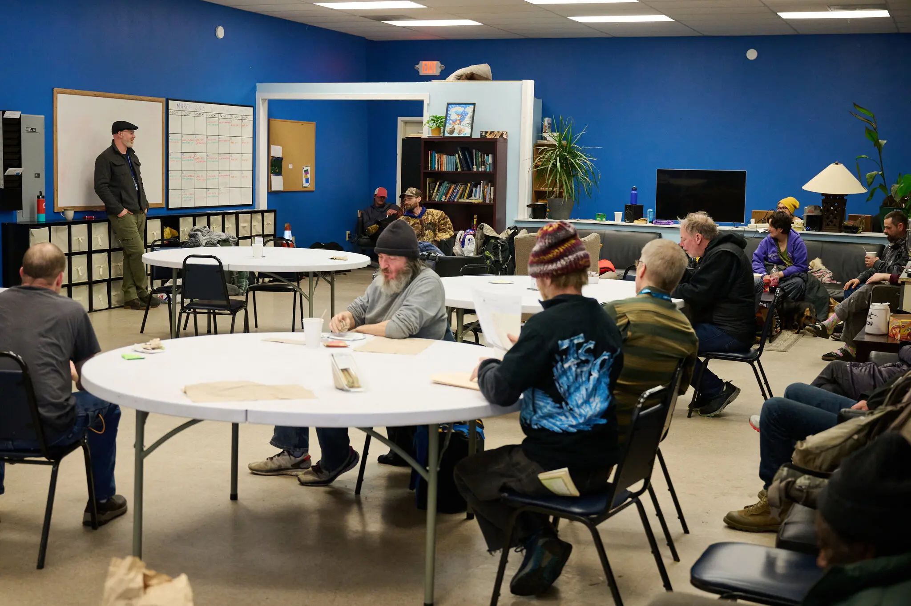

Craig Coyner’s descent onto the streets of Bend, Ore., came after decades spent fighting as a lawyer and politician for those on the edge of society.
BEND, Ore. — As he navigated one day last fall through a crowded grid of beds at one of Oregon’s largest homeless shelters, Steve Martin, a longtime rancher and community volunteer, was brought to a halt by a familiar voice that called out from an unfamiliar face.
“Aren’t you going to say, ‘Hi,’ Steve?” said the man, with eyes peering through curtains of white hair and a beard that flared in neglected disarray. Mr. Martin, who spent many of his days working among the shelter’s residents, considered the man’s gaunt frame, searching for a clue. Then the man spoke again: “It’s Craig.”
The words jolted Mr. Martin with a mix of recognition and disbelief. He had known Craig Coyner for more than 50 years, watching with admiration as the man from one of the most prominent families in Bend, Ore., rose through an acclaimed career — as a prosecutor, a defense lawyer and then a mayor who helped turn the town into one of the nation’s fastest-growing cities.
Now, at age 75, Mr. Coyner was occupying a bed at the shelter on Second Street, his house lost to foreclosure, his toes gnarled by frostbite, his belongings limited to a tub of tattered clothing and books on the floor next to his bed.
In the years since the two old friends had fallen out of touch, Mr. Coyner had been pulled through a vortex of the same crises that were churning through many boom towns across the West: untreated mental illness, widespread addiction, soaring housing costs and a waning sense of community. After a life spent as a pillar of Bend’s civic life, Mr. Coyner had somehow reached a point of near total destitution, surrounded by the prosperity he had helped create.
Once a tiny timber town, Bend had undergone a striking transformation in recent decades, as moneyed newcomers from Seattle or Portland or San Francisco discovered a getaway that managed to be both trendy and a throwback to what everyone imagines small-town America can be. Families could float the Deschutes River in the summer and ski the Cascades in the winter, stopping at an array of craft breweries, organic eateries, art galleries and — a point of special pride for the city — the last Blockbuster video store on Earth.
Lighthouse Navigation Center, a homeless shelter in Bend where Mr. Coyner sought refuge.
Credit...Joe Kline for The New York Times
But as housing costs strained the budgets of Bend’s nurses, teachers and police officers, homelessness soared in the city of 100,000 people, much as it had in far larger West Coast cities. RVs started parking on side streets; people with full-time jobs at gas stations and grocery stores at times went home to tents erected in the sagebrush along street medians. The shelter where Mr. Coyner had finally found refuge had been over capacity for months.
Mr. Martin’s mind raced with questions for Mr. Coyner, as he wondered what had transpired in the years since they last connected and how Mr. Coyner’s life could have taken such a drastic turn.
Over the next couple of months, he would pick up Mr. Coyner from the shelter from time to time, and they would go out for drives. They stopped to get Mr. Coyner an overdue haircut at King’s Razor. They grabbed coffee at the 7-Eleven. They sat out by the municipal airport, watching the private planes come and go while reminiscing about their long-ago efforts to save the airstrip from closure.
They talked more about the future than the past, with Mr. Coyner wondering how he could find a more permanent place to live.
“He was real discouraged that he would never find anything,” Mr. Martin said.
But Mr. Coyner was also starting to regain the optimism that had long defined his view of the city. Plenty of people in Bend were going through hard times, he said in an interview earlier this year when he talked about the arc of his life. He had seen them overcome such times before, and they would do so again. So would he.
“This is my town, I love it.”
- Craig Coyner, Former mayor of Bend, OR.
A Mayor During Turmoil
Mr. Coyner was born into a family committed to civic duty.
In the early 1900s, his great-grandfather was mayor of Bend, then a newly incorporated outpost in central Oregon where timber prospectors were scooping up forestlands. Before long, a community once known as a place to ford the river was a key stop on a growing railroad network. Some of the largest pine mills in the world processed logs so massive that some first needed to be split by dynamite.
By the mid-1970s, after getting drafted for a stint in the Marines, marrying his girlfriend from college and getting a law degree in Portland, Mr. Coyner returned to Bend, following his father into a career as a lawyer and settling into a compact one-story home, purchased for $25,500 in the northeast corner of town.
The couple had two daughters but split up a few years later, as Mr. Coyner, still building his legal career, at times grew combative at home.
Itching to spar over the wonkiest legal doctrines, he commanded such a depth of knowledge and a skill for arguing that he kept notching victories for clients and frustrating the local prosecutors, who decided the best course of action was to hire Mr. Coyner.
“I thought he’d be better working in our office — working for us, rather than against us,” said Mike Dugan, who was in the county prosecutor’s office and later became the district attorney.
In 1981, Mr. Coyner, who cut a figure around town with his tortoiseshell glasses and calculator watch, joined the City Council. He married Patty Davis, who worked selling radio advertising around Bend, and as his former wife also remarried, he stopped connecting with his daughters.
In 1984, his fellow council members elected him as mayor.
It was a time of tumult for the city. The global recession had gutted the timber industry, with less wood product going to customers around the world and more covering up windows in Bend’s empty business district. Locals feared the community was on the path to becoming a ghost town.
Homeless people congregated along the railroad tracks that had helped establish Bend as a timber capital. On cold nights, rail crews would deliberately leave some of their idle train cars open, providing a modest refuge.
Mr. Coyner worked with Mr. Martin to raise funds for them, at times going out to the railroad tracks himself to distribute donated clothes and 19-cent cheeseburgers picked up from the local Arctic Circle. His connections helped people find cheap places to live at a time when rooms could be rented for as little as $75 a month.
Mr. Coyner saw it as a time to transition Bend’s economy to something that would harness the surrounding natural beauty in new ways, welcoming visitors who sought to ski, hike, camp and bike.
He and fellow council members began drawing up plans to expand the sewer system and improve road capacity. Kathie Eckman, one of the council members at the time, said there was excitement but also uncertainty.
“We were warned at that point: Be careful what you wish for,” Ms. Eckman said.
New Directions
The timber mills were shutting down, but the old mill district began evolving into what today is a ritzy shopping district with an REI, a spa and a designer jewelry store.
Some people were wary of such swift change, and in 1992, Mr. Coyner was ousted from the City Council by rivals seeking to rein in growth. It did not work: Over the subsequent decade, the county’s population grew faster than anywhere else in the state.
Mr. Coyner returned to his work as a defense lawyer, and he regularly reminded younger peers about the importance of continuing to fight for those who were less fortunate. He spoke about health care and transportation and poverty and all the other factors that might lead someone to commit a crime.
“He would say, ‘To be effective at that job as a public defender, you have to fight for solutions to the problems that would cause your defendants to get involved in the criminal justice system in the first place,’” said John Hummel, who joined the public defender’s office in 1996 and later became district attorney.
Mr. Coyner, right, and Glenn Reed at a Bend City Commission meeting in November 1985.
Bend Bulletin, via Deschutes County Historical Society
Mr. Coyner had long been a personable, intelligent lawyer who got along with judges and clients, said Tom Crabtree, who was the head of the public defender’s office at the time. But in later years, Mr. Crabtree said he watched as Mr. Coyner’s amiable nature started to grow caustic.
Judges began to report concerns about Mr. Coyner’s work and conduct. The office altered his job duties to try and ease his travel schedule. But the concerns kept compounding.
When a judge removed him from a case one day, Mr. Coyner’s startling outburst in the courtroom led Mr. Crabtree to decide it was time to terminate Mr. Coyner, who responded, he said, with a death threat.
For several days, Mr. Crabtree wore a bulletproof vest to work.
A Series of Losses
The underlying problem was an emerging bipolar disorder, Mr. Coyner said, compounded because he had turned to drinking as a way to cope.
On the day after Thanksgiving in 2003, a few years after losing his job, Mr. Coyner was arrested, accused of damaging a woman’s car and resisting a police officer. The state bar suspended his license in response to complaints that he was neglecting duties to his clients.
Then, in 2008, came the worst blow of all: His wife, Patty, died after an illness.
Mr. Coyner had already pushed others out of his life, not only his daughters, but his sister, who had started to distance herself when late-night drunken phone calls had turned abusive. After Patty died, his brother came to check on him, but Mr. Coyner did not seem to want him there.
Police encounters twice led him to being placed briefly in psychiatric care, and he struggled to get his life back on track.
But he managed to find a connection with a new friend, Cheraphina Edwards. They had met at a local saloon, and she later brought him a DVD of a film produced by the conspiracist Alex Jones about how global elites were advancing a secret plan to exterminate much of humanity. Mr. Coyner was enthralled, Ms. Edwards said, and as she moved in with him to serve as a caregiver, the two began discussing Mr. Coyner’s theories that powerful figures in Bend were plotting to kill him.
Even then, Mr. Coyner was regularly welcoming people who had lost their housing to stay at his small house, or out in the yard. Some days, he would go down to the Bend Community Center, which served daily meals to the needy, arriving early to help set up coffee or staying late to wash dishes.
But without a job, he was falling behind on his mortgage, and the bank began foreclosure proceedings in 2012.
In Bend, vehicles park along Hunnell Road, which has become an encampment for people experiencing homelessness.
Credit...Joe Kline for The New York Times
Mr. Coyner had worked in prior years to help others facing foreclosure, and he resisted his own fate vehemently. Still, by 2017, the police were closing in on plans to evict him. Mr. Coyner had warned an agent at the mortgage company that the only thing the banks would receive from him was a “burnt house with a body inside,” one officer wrote in an email at the time to his colleagues.
When deputies eventually removed Mr. Coyner from the house, he and Ms. Edwards found few living options in a changed city. Rents had jumped 40 percent in five years. Many people who had lived in town their whole lives could no longer afford to live there, he said.
Mr. Coyner and Ms. Edwards crashed for a bit on a friend’s couch. They spent other times sleeping in a truck, parked in the woods next to a golf course. Eventually, they heard about an abandoned cabin in the nearby community of La Pine, driving out to find that it looked more like a shed and would require them to bathe from water heated on a wood stove.
“It was so tiny, it scared me,” Ms. Edwards said. “I put it in reverse, and Craig said, ‘No, we’re going to have to live here.’”
Photos of homeless encampments in Oregon
New Connections
On a spring day in 2018, Mr. Coyner was walking near the hospital in Bend when a woman stopped him.
“Craig?” the woman asked.
“You’re my daughter,” he said with a shock of recognition.
It was Catherine Emick, one of the daughters he had not seen since she was a teenager. Now, she was 40. They exchanged phone numbers and made plans to meet again.
It was the beginning of a slow reconciliation. One day, they met for drinks. She sipped a lemonade; he had a beer. Soon, he was beginning to reconnect with his other daughter, Elizabeth Smith. But he never asked for help.
By then, the coronavirus pandemic had heightened awareness of the attractive, small-town life that Bend offered, and remote workers with lucrative salaries were scooping up homes. The median home price jumped to nearly $800,000, with houses often snapped up by all-cash buyers.
Mr. Coyner found himself camping sometimes in a tent along the Parkway, the road he had helped get built to prepare Bend for the growth city leaders had anticipated. Other times, he set up on the property of a group that served homeless veterans — an organization where he was once a board member. Sometimes he would venture near Coyner Trail, a walking path through town named for his family because of all they had done for the city.
He heard a voice inside and pulled back the tent flap. A pungent smell of urine and feces filled the air. Inside, Mr. Coyner’s shoes were soaking wet, his feet so frostbitten he was hobbling with pain when he tried to stand up. When he refused to go to a shelter, Mr. Smalley contacted Ms. Edwards, and she called the police for help.
He wound up at the hospital, where he was treated for frostbite, but he was soon discharged to the city’s new low-barrier shelter. It had room for 100 but often had many more sleeping there.
“I’ve got a lot of company,” Mr. Coyner said in the interview. “Places like this are absolutely necessary.”
The frostbite had damaged Mr. Coyner’s toes so badly that he had to go back to the hospital at the end of January for an amputation. There were complications. After the surgery, he had a stroke that left him unable to speak.
Mr. Martin came to visit, and so did Ms. Edwards, praying for him. Mr. Coyner lurched forward in joy when Ms. Smith, his daughter, came. She sat for hours, telling him about her life and introducing him to her husband.
“I wanted to let him know I’m doing OK,” she said. “I wanted him to know that he wasn’t alone.”
When his other daughter, Ms. Emick, held his hand and bowed her head, Mr. Coyner reached over and touched her head. She hugged him, the kind of embrace they had not shared in 35 years. She wondered how the city her father loved had missed so many opportunities to help him.
If he had been a dog, she said, somebody would have rescued him long ago.
Days later, on Feb. 14, Craig Coyner died.
This story has been reproduced as part of coursework for the Philip Merrill College of Journalism at the University of Maryland, College Park. It was originally published by The New York Times